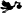
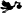

(  Ver 1865 )
(  Ver 1865 )DUBOIS Louis Joseph
 ( entre 1794 et 1804 )
( entre 1794 et 1804 )DUBOIS Louis Philippe
( 21/05/1885 Flines-lès-Mortagne, 59158, Nord, Nord-Pas-de-Calais, France )DUBOIS Marcel Alfred
( 12/08/1903 Saint-Amand-les-Eaux FRA - du BOIS Maria Anna Theresia
( 30/08/1752 Geluveld BEL - DUBOIS Marie Anne
( 23/09/1887 Flines-lez-Raches FRA - DUBOIS Marie Thérèse
( Ver 1903 - DUBOIS Paul Michel
( 06/06/1893 Flines-lez-Raches FRA - DUBOIS Paulette
DUBOIS Pierre Antoine
DUBOIS Raymonde Sophie
( 07/05/1902 Saint-Amand-les-Eaux FRA - DUBOIS René Léon
( 16/09/1886 Saint-Amand-les-Eaux FRA - DUBOIS Stéphanie Rosalie
( 1839 Wormhout FRA )DUBOIS Theodorus
( 1676 - DUBOIS Thérèse
DUBREUCQ Antoinette Marguerite Julie
( 13/02/1898 Calais FRA - DUBREUCQ Benoit (0-B5.5.6.3.9.1)
DUBREUCQ Michel
DUBREUIL Françoise
( DUBRUILLE Adrien
( 1661 Flines-lez-Raches FRA - DUBRUILLE François
( 1656 - DUBRUILLE Jean
( 1637 - DUBRUILLE Jean Charles
( 1685 Flines-lez-Raches FRA - DUBRUILLE Jean Chrisostome
( 1701 Flines-lez-Raches FRA - DUBRUILLE Maria
( Ver 1875 Arleux FRA )DUBRUILLE Marie Agnes Ernestine
( 1698 - DUBRUILLE Marie Angélique
( 1695 - DUBRUILLE Marie Angélique
( 1691 - DUBRULLE Alain Lucien
( 23/04/1950 La Falaise, 14340, Calvados, Basse-Normandie, France )DUBRULLE Alexia
( 24/11/1996 )DUBRULLE Alexis
DUBRULLE Aliza
( 20/09/1999 )DUBRULLE André Jules
( 07/06/1946 Wattrelos FRA )DUBRULLE Arena
( 23/10/2000 )DUBRULLE Edmond Jules
( 23/06/1923 Wattrelos FRA - DUBRULLE Ewan
DUBRULLE Fabien
( 30/06/1979 )DUBRULLE Jean Louis
( 11/11/1861 Dottignies, B-7711, , Hainaut, Belgique - DUBRULLE Jules
( 13/05/1900 Wattrelos FRA - DUBRULLE Laurent
( 04/04/1977 Cherbourg-Octeville FRA )DUBRULLE Laurent
( 26/05/1966 )DUBRULLE Marie Christine Aline
( 20/03/1964 )DUBRULLE Pamela
( 09/04/1983 )DUBRULLE Simone Léonie
( 16/10/1926 Wattrelos FRA - DUBRULLE Simone Olga
( 09/06/1947 Wattrelos FRA - DUBRULLE Sophie
( 13/12/1986 )DUBRULLE Théo
( 03/10/2000 )DUBRUNFAUT Henri Achille
( 05/04/1859 Camphin-en-Pévèle FRA - DUBRUNFAUT Victoire Marie
( 24/04/1894 Camphin-en-Pévèle FRA - DUBUIS Helena
DUBUIS Iel
DUBUIS Joséphine Marie Mélanie
( 1876 Dunkerque FRA )DUBUIS Marc
DUBUIS Paul Séraphin
DUBUIS Pierre Albert
DUBUISSON Marie Catherine
( DUBURQUE Adèle
DUBURQUE Ferdinand
DUBURQUE Henria Victoria Louisa
DUBURQUE Louis Pierre François
( 16/02/1865 Râches FRA )DUBURQUE Raymonde
DUBURQUE Valentine Marie Lydie
DUBUS Adèle Zéphirine
( Ver 1855 - DUBUS Antoinette
( 23/01/1641 Auchy-lez-Orchies FRA )DUBUS Appoline
( entre 1834 et 1844 )DUBUS Célestin
DUBUS Celine Aline
( 17/08/1873 Flines-lez-Raches FRA )DUBUS Cristine Ernestine Joseph
( 25/08/1745 Flines-lez-Raches FRA )DUBUS Emile
( 1848 )DUBUS Ferdinand
( 02/02/1783 Orchies FRA )DUBUS Hypolite
( 17/01/1871 Lille FRA )DUBUS Jacques
( entre 1611 et 1612 )DUBUS Jacques
( DUBUS Jean
DUBUS Jean
DUBUS Jean Antoine
DUBUS Jean Luc
DUBUS Léonie
DUBUS Louis François
( 28/05/1748 Flines-lez-Raches FRA )DUBUS Marie Christine
( 07/01/1782 Cappelle-en-Pévèle FRA - DUBUS Marie Elisabeth
DUBUS Marie Françoise
( 21/11/1730 Raimbeaucourt FRA )DUBUS Pierre Antoine
( 11/06/1733 Coutiches FRA )DUBUS Rosalie
( 1775 - DUBUS Rosalie
( DUBUS Sidonie
( 02/08/1877 Bruille-lez-Marchiennes FRA )DUBUS Valentine Eglantine Elisabeth
( 23/02/1774 Flines-lez-Raches FRA - DUC Franciscus
( 23/03/1728 Wingene BEL )DUC Rosalia
( 13/10/1730 Wingene BEL )DUCARNE Clémence
( Ver 1902 Jolimetz, 59530, Nord, Nord-Pas-de-Calais, France - DUCARNE Paule
DUCHÂTEAU Louis Gustave
( DUCHATEL Alfred Louis
DUCHATEL Jean Baptiste Joseph
( 26/09/1824 Radinghem, 62310, Pas de Calais, Nord-Pas-de-Calais, France )DUCHAUSSOY Marguerite Louise Adèle
( 17/01/1924 Bergues FRA )DUCHEMIN Francine Marie Gilberte
DUCHENE Geneviève
DUCHESNE Bruno
( 09/02/1983 )DUCHESNE Michel
DUCHEYNE Margriet
( 06/09/1912 Houtave BEL - DUCHEYNE Prosper
DUCHOSSOIS Lucie Julie
DUCK Antonius
DUCK Franciscus
DUCK Joanna Teresia
( 30/05/1726 Wingene BEL )DUCK Joannes
DUCK Joseph
( 19/03/1722 Wingene BEL )DUCK Maria ( Anna )
( 05/05/1724 Wingene BEL - DUCK Michael
DUCLOS Charlotte Aurélie
DUCOS Régine
DUCOULOMBIER Alain
( 1942 - DUCOULOMBIER Christelle
DUCOULOMBIER David
DUCOULOMBIER Fabien
DUCOURANT Jeanne
DUCOURANT Rosalie Florence Clémence
( 21/06/1847 Steenvoorde FRA - DUCOUVENT Claude François
( 24/09/1715 - DUCOUVENT Marie Joseph
( 04/09/1748 Flines-lez-Raches FRA - DUCOUVENT Philippe
DUCROCQ Anastasie Julienne
( 07/12/1886 )DUCROCQ Christophe
DUCROCQ Felicien François Cornil
( 13/05/1889 Rosendael FRA - DUCROCQ Laurent Cesar
DUCROCQ Marie Jacqueline
( 17/03/1698 Bourbourg FRA - DUCROCQ Marie Jeanne
( 02/02/1703 Bourbourg FRA - DUCROCQ Marie Pétronille
( 17/01/1696 Bourbourg FRA )DUCROCQ Philippe
( 1662 - DUCROCQ Pierre François Cornil
( 12/06/1830 Dunkerque FRA )DUCROCQ Quentin Jean Luc Lionnel
( 14/10/1997 Abbeville, 80100, Somme, Picardie, France )DUCROCQ Robert
DUCROCQ Xxx
DUCROQUET Antoine
DU CROQUET Antoine
( 1658 Flines-lez-Raches FRA - DUCROQUET Luce Lucie Joseph
( 1714 Flines-lez-Raches FRA - DU CROQUET Marie Anne Bernarde
( 1698 Flines-lez-Raches FRA - DUCROQUET Marie Gabrielle
DUCROQUET Michel Henry
DUCX Judoca
DUELLO Marcelle Blanche
DUEZ Adélaïde
( DUEZ Adolphine Joséphine
( 01/09/1834 Flines-lez-Raches FRA - DUEZ Aimable
( DUEZ Albertine
( 02/01/1873 Flines-lez-Raches FRA )DUEZ Albertine
( 22/12/1874 Flines-lez-Raches FRA )DUEZ Albertine
( 11/02/1884 Flines-lez-Raches FRA )DUEZ Alexandre Joseph
( 21/08/1847 Flines-lez-Raches FRA )DUEZ Amélie
( 30/11/1854 Flines-lez-Raches FRA )DUEZ Amélie
( 11/03/1844 Flines-lez-Raches FRA - DUEZ Angèle
( 23/03/1891 Flines-lez-Raches FRA - DUEZ Angéle Augustine
( 07/05/1864 Flines-lez-Raches FRA )DUEZ Antoine Charles
( 06/10/1761 Flines-lez-Raches FRA )DUEZ Apolline Ernestine
( 10/06/1891 Leforest FRA - DUEZ Armense Joséphine
( 17/05/1832 Flines-lez-Raches FRA - DUEZ Auguste
( 22/06/1886 Flines-lez-Raches FRA )DUEZ Augustin
( 27/04/1868 Flines-lez-Raches FRA )DUEZ Augustine
( 14/03/1836 Flines-lez-Raches FRA )DUEZ Bernard
DUEZ Bernard
( 06/08/1827 Râches FRA )DUEZ Berthe
( 08/01/1899 Flines-lez-Raches FRA )DUEZ Caroline
( 28/11/1823 Flines-lez-Raches FRA - DUEZ Catherine
( 03/01/1844 Flines-lez-Raches FRA )DUEZ Catherine
( 18/06/1881 Flines-lez-Raches FRA - DUEZ Cécile
( 26/09/1901 Flines-lez-Raches FRA )DUEZ Célestine Joseph
( 1826 Râches FRA - DUEZ Celestine Joseph
( 06/01/1786 Flines-lez-Raches FRA - DUEZ Celestine Josephine
( 11/08/1828 Flines-lez-Raches FRA - DUEZ Celina Telma
( 27/06/1851 Flines-lez-Raches FRA )DUEZ Céline
( 11/10/1854 Flines-lez-Raches FRA )DUEZ Charles
( 1735 Flines-lez-Raches FRA - DUEZ Christine
( 24/06/1781 Flines-lez-Raches FRA - DUEZ Clotilde
( 29/03/1891 Flines-lez-Raches FRA )DUEZ Constant
( 23/12/1840 Flines-lez-Raches FRA )DUEZ Constant
( 17/12/1893 Flines-lez-Raches FRA )DUEZ Constant
( 15/12/1882 Flines-lez-Raches FRA - DUEZ Constant
( 18/02/1869 Flines-lez-Raches FRA )DUEZ Edmond Joseph
( 23/11/1859 Flines-lez-Raches FRA - DUEZ Éléonore
( 01/11/1886 Flines-lez-Raches FRA )DUEZ Eléonore
( 23/06/1853 Flines-lez-Raches FRA )DUEZ Eléonore Joseph
( 24/08/1818 Flines-lez-Raches FRA )DUEZ Elisabeth
( 22/05/1894 Flines-lez-Raches FRA - DUEZ Emile
( 21/06/1883 Flines-lez-Raches FRA - DUEZ Emile
( 20/04/1867 Flines-lez-Raches FRA - DUEZ Emile Augustin Pierre Joseph
( 29/09/1889 Flines-lez-Raches FRA )DUEZ Emmanuel
( 17/05/1815 Flines-lez-Raches FRA )DUEZ Enfant Mort Né
( 12/08/1900 Flines-lez-Raches FRA - DUEZ Ernest
( 11/06/1894 Flines-lez-Raches FRA )DUEZ Ernestine
( februari 1812 Flines-lez-Raches FRA - DUEZ Ernestine
( 13/11/1868 Flines-lez-Raches FRA )DUEZ Ernestine
( 30/06/1754 Flines-lez-Raches FRA - DUEZ Ernestine
( 1758 - DUEZ Eugène
( 28/01/1892 Flines-lez-Raches FRA )DUEZ Fernande Léonie
( 24/06/1926 Coutiches FRA )DUEZ Florentin
( 24/01/1791 Flines-lez-Raches FRA - DUEZ Florentin Joseph
( 20/10/1822 Flines-lez-Raches FRA - DUEZ Florentine
( 26/09/1782 Flines-lez-Raches FRA )DUEZ Florentine
( 28/01/1800 Flines-lez-Raches FRA )DUEZ Florentine Joseph
( 02/06/1808 Flines-lez-Raches FRA )DUEZ Florentine Joseph
( 1752 Flines-lez-Raches FRA - DUEZ François
( 16/10/1884 Flines-lez-Raches FRA )